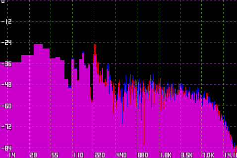
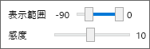

スペクトラムウィンドウ
音声スペクトル(周波数ごとの強度)を表示するためのサブウィンドウです。
説明
- 左ドラッグでウィンドウ自体を移動します。
- ウィンドウが非アクティブの場合、背景が半透明になります。
-
このウィンドウには、メインウィンドウのカーソル位置周辺のスペクトルが逐次描画されます。
- 実際に流れている音ではなく波形データそのものを計算に使うため、再生中でなくともカーソルを移動すればこのウィンドウの波形は更新されます。
- 高速フーリエ変換による周波数分析を行うため、区間の幅が低周波数領域では広く、高周波数領域では狭くなります。
-
右クリックするとメニューを開きます。

- 表示範囲: 縦軸(音量レベル)の表示範囲を変更できます。単位はdBです。
-
感度: 表示する波形に過去のデータを反映する割合です。1-20の20段階で指定します。
- 感度が高いほど「その瞬間」のスペクトルを反映するため、再生時に波形が激しく動きます。
- 感度が低いほど「長時間」のスペクトルを反映するため、再生時は波形が緩やかに動きます。